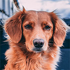
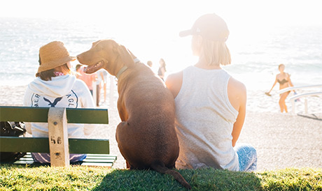

Питомник породистых животных рядом с вашим домом
Животные как дети - им нужны мыО питомнике
Наш питомник - не просто дом для животных,
а семья из разных пород собак и кошек
- Лучшие представители своей породы
- Сбалансированный рацион питания питомца
- Ежедневный уход и тренировки
- Веселье, свежий воздух и отличная компания
Наши породы
Французский бульдог
Идеальный вариант городской собаки - они входят в тройку самых популярных собак на планете. Любят короткие прогулки и хорошо поспать.
Золотистый ретривер

Добродушные, ориентированные на людей собаки. Они отлично ведут себя с детьми и больными. Могут быть поводырями.
Чау-чау
Эти собаки с характером. Они всегда серьезны но временами проявляют характер.
Пудель

Активные и компанейские собаки. Любят много гулять, обладают отличными чувством юмора.
Отзывы хозяев
Татьяна Зверева
Хочу выразить большую благодарность Вам за это чудо - малыша, который появился у нас в семье. Деликатный, милый, ласковый, и нежный белоснежный Уник, в которого я влюбилась с первого взгляда, увидев его фотографию на сайте Вашего питомника. Очень умный малыш!

Больше отзывов можно найти у нас в группе ВК
Всё о животных
Мы ведем активный блог про наших животных в социальных сетях - присоединяйтесь к нам. Полезные материалы про обучение, дрессировку, питание.
Правильный рацион для взрослого пса
Читать статьюБывает ли собачья депрессия?
Читать статьюКонтакты
Адрес
г.Санкт-Петербург, ул.Кирочная 61
Режим работы
Каждый день с 10:00 до 22:00
E-MAIL
petshelp@pets.ru
+7 (925) 256 78 96
Мы принимаем звонки с 10:00 до 21:00
Мы принимаем звонки с 10:00 до 21:00